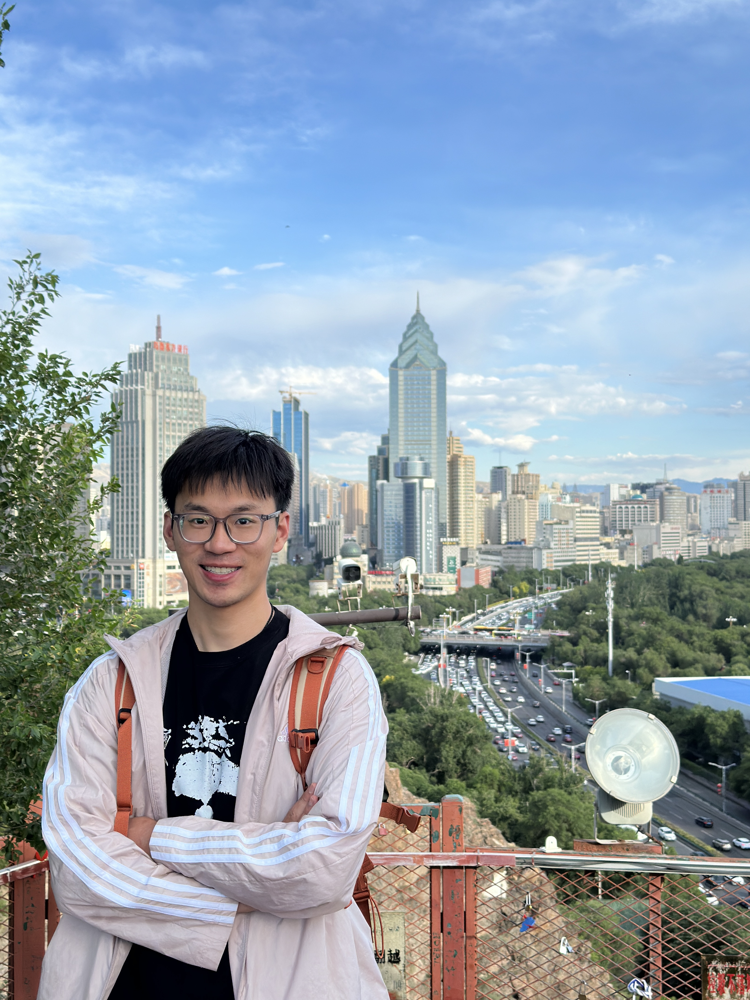

Jiahuan Wang (王佳欢)
College of Informatics |
 |
I am a third-year master student of AISLE Group in the Department of Mathematics, Huazhong Agricultural University, advised by Prof. Hong Chen. Before that, I received my B.S. degree from the Department of Mathematics, Liaoning Technical University in July, 2021. I will pursue my Ph.D. at Nation University of Defense Technology, under the guidance of Prof. Tao Sun, Kaijun Ren, Dongsheng Li.
My research interest includes machine learning theory and deep learning.